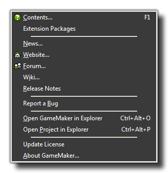

Here you find some commands to help you :
- Contents : Use this command to bring up the help file.
- Extension Packages : Use this to show the help file for specific extension packages that you have installed. Please note that this option will not be present in the Free Version of GameMaker:Studio
- News : Here you can see the most recent news about the GameMaker range of products and the company YoYoGames.
- Website : Connects you to the YoYoGames official website.
- Forum : This will connect you to the GameMaker Community (GMC) forum, where you can find help with any problem as well as tutorials, resources and much more all related to GameMaker:Studio.
- Wiki : This will take you to the GameMaker wiki where you can find plenty of official information about the use of GameMaker products.
- Release Notes : Opens a tab in your browser to show the current build and accompanying release notes for your version of GameMaker:Studio.
- Report A bug : While we make every effort to make sure GameMaker:Studio is bug free, in a program as large and complicated as this it is a nearly impossible task. So, if you find something you think is a bug, then please use this link and report it to us and we'll do our very best to fix it.
- Open GameMaker in Explorer : Use this command to open the folder location of GameMaker:Studio in Windows Explorer.
- Open Project in Explorer : Use this command to open the folder location of your current project in Windows Explorer.
- Update Licence : if you have bought a new licence to upgrade GameMaker:Studio to a new version or to add a new target module, then you should select this option to activate it. Note that if you bought GameMaker:Studio through Steam this option will not be present.
- About GameMaker:Studio : Gives information about this version of GameMaker:Studio, including the product key and the user it's registered to.